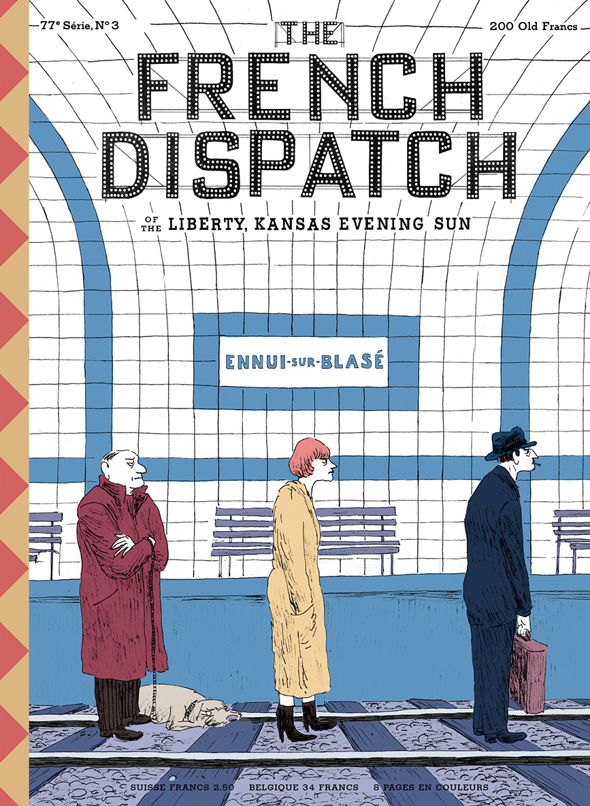

Wes Whimsy
The Royal Tenenbaums
Fantastic Mr. Fox
Isle of Dogs
The French Dispatch
The French Dispatch - Magazine Covers
The Cycling Reporter
The Private Dining Room of the Police Commissioner
Revisions to a Manifesto
The Concrete Masterpiece
Bakery Robbery
Liberty

Metro Platform
Piggy Bank